도깨비의세계 도술 조합 추천 사냥·PvP 인기 빌드 4유형, 10월 21일 도술 초기화 전 10월 19일 기준
10월 21일(수) 정기 점검에 도술 강화와 돌파가 초기화된다는 소식에, 지금 뭘로 키워야 할지 고민이시죠~ 사냥은 어떤 도술 조합이 많이 쓰이는지, PvP는 뭘 쓰는지 초기화 전 마지막 스냅샷으로 한 번에 정리해 봤어요. 10월 14일 패치 뒤 깨비지지 유저 추천 목록은 순위가 크게 바뀌었거든요.
결론부터 말씀드리면 세 가지예요.
- 사냥 인기 빌드는 네 갈래로 모여 있고, 깨비지지 유저 추천 합계 몫은 기동 31.9%, 파멸 22.2%, 연타 20.0%, 암습 18.6% 순이에요.
- PvP는 깨비지지에서 PvP용이라고 밝힌 빌드가 6개뿐이고 최고 추천이 4라서, '인기 상위 PvP 조합'이라고 부를 근거가 아직 없어요.
- 10월 21일 점검에서 도술 강화·돌파 초기화와 대규모 개편이 예고돼 있어서, 이 글은 개편 직전인 10월 19일(월) 밤 기준이에요.
기준은 10월 19일 밤 9시 30분 무렵 깨비지지 도술 빌더의 유저 추천 목록이고, 158개 빌드를 궁극기 기준으로 묶었어요. 공식 내용은 포럼 공지·업데이트 안내와 라이브 방송까지만 담았는데요, 10월 20일(화) 라이브와 10월 21일 점검 공지는 아직 올라오지 않아서 그 뒤 내용은 없어요.
깨비지지는 카카오게임즈·슈퍼캣과 무관한 비공식 팬 사이트이고, 추천 수는 '많이 눌렀다'는 인기 지표일 뿐 성능을 확인한 값이 아니랍니다. 그래서 이 글의 몫은 확정 티어표가 아니라 지금 많이 쓰이는 정도를 보는 값이고, 10월 21일 개편 뒤에는 달라질 수 있어요.
10월 21일 도술 초기화 전에 공식이 이미 밝힌 건 뭔가요?
공식이 확정한 건 10월 14일 패치의 도술 피해량 상향까지이고, 10월 21일 대규모 개편과 저격·절명 조정은 아직 예고 단계예요.
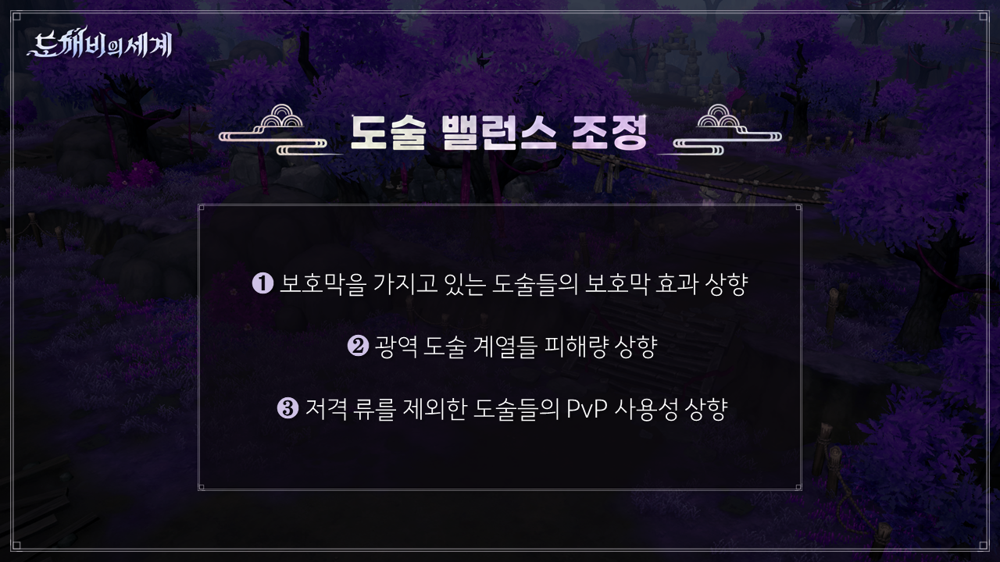
10월 13일 공식 라이브 슬라이드예요. 보호막 효과, 광역 도술 피해량, 저격류를 뺀 도술의 PvP 사용성이 상향 항목으로 적혀 있어요.
출처: 카카오게임즈 도깨비의세계 공식 라이브(10월 13일) 슬라이드
| 구분 | 내용 | 시점·출처 |
|---|---|---|
| 공식 확정 | [PvP] 척살·기만·파멸·제압·기동·절명 도술 피해량 상향 | 10월 14일 업데이트 안내(18403) |
| 공식 확정 | [PvE] 주술·강타·기동·제압·파멸·연타·기만·헌신·강인의 광역기 위주 도술 피해량 상향 | 10월 14일 업데이트 안내 |
| 공식 확정 | 도술 쿨타임 감소에 상한을 두고, 넘는 성장분은 피해량 증가로 반영 | 10월 14일 업데이트 안내 |
| 공식 확정 | 저격류를 제외한 도술의 PvP 사용성 상향 | 10월 13일 공식 라이브 |
| 공식 예고 | 10월 21일 정기 점검에서 도술 대규모 밸런스 개편 | 10월 17일 공식 라이브 |
| 공식 예고 | 조정되는 도술이 있고, 저격·절명 질문은 화요일(10월 20일)에 설명 | 10월 17일 공식 라이브 |
10월 19일 밤까지 올라온 공식 포럼 글과 라이브 방송 기준이에요. 10월 20일 라이브 이후는 반영 전이에요.
상향 대상 스타일과 인기 빌드가 겹치는 건 맞지만, 상향이 인기의 원인이라고 말할 근거는 공식에 없는데요, 저격·절명도 '조정되는 것이 있다'까지만 나왔거든요. 너프 여부나 방향은 밝혀지지 않았어요.
사냥 도술 조합은 지금 어떤 4유형이 많이 눌렸나요?
깨비지지 유저 추천 합계 기준으로 기동 광역이 가장 많이 눌렸고 파멸, 연타 광역, 절명+저격 단일(암습) 순이에요. 네 유형을 합치면 전체 추천의 90%를 넘어요.
| 유형 | 궁극기 | 추천 몫 | 대표 빌드 추천 수 | 커뮤니티에서 부르는 말 |
|---|---|---|---|---|
| 기동 광역 | 연속 쇄도 | 31.9% | 1,006 | 기동단 |
| 파멸(+저격) | 대폭발 | 22.2% | 349 · 142 · 114 | 쌀먹왕(저격을 섞은 구성이라는 뜻으로 쓰는 말) · 뉴파멸(힐을 뺀 구성) |
| 연타 광역 | 폭주 | 20.0% | 381 · 273 | - |
| 절명+저격 단일 | 암습 | 18.6% | 362 · 151 · 149 | - |
깨비지지 기준 10월 19일 21시 30분 무렵 조회(비공식 팬이 만든 데이터 사이트) · 유저 추천 158개 빌드를 궁극기별로 묶은 추천 합계 몫이고, 나머지 7.3%는 기만·주술·헌신 등이에요 · 별칭은 공식 명칭이 아니에요
10월 10일에 정리한 글에서는 상위 7개 중 다섯 개가 암습 빌드였는데, 지금은 몫 4위로 내려왔어요. 또 1위 추천 1,006은 두 번째 빌드의 2.6배라서 한 빌드에 많이 쏠려 있네요. 깨비지지는 10월 14일 이전 패치에 등록된 빌드를 따로 분리해 두었으니, 이 글의 순위는 패치 뒤 등록분이에요.
유형별 대표 빌드는 8칸을 어떻게 채우고 어떤 순서로 쓰나요?
유형별 추천 1위 빌드는 도술 8칸에 궁극기 1개를 얹은 구성이고, 사용 순서는 모두 등록자 설명란에 적힌 순서예요.
기동 광역(추천 1,006)은 기동 3개와 저격 3개에 영혼 소용돌이·공간 결계를 더하고 궁극기 연속 쇄도를 쓰는 구성인데요, 번호는 등록자가 설명란에 적은 순서 그대로예요.
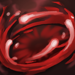 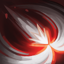 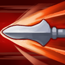 2연속 쇄도(기동)→3사격(저격)→
2연속 쇄도(기동)→3사격(저격)→ 4쇠뇌 사격(저격)→
4쇠뇌 사격(저격)→ 5이중 사격(저격)→
5이중 사격(저격)→ 6공간 결계(기만)→
6공간 결계(기만)→
기동 광역 대표 빌드 · 번호는 등록자 설명란 순서이고 2번 연속 쇄도가 궁극기예요
영력 수치는 공식 확인 전이라 뺐지만, 등록자는 영력이 가득 차면 연속 쇄도가 초기화된다고 적었어요. 도약 찌르기 자리는 나중에 월식으로 바꿀 거라고 하고, 강화는 중요하지 않다는 말도 남겼어요.
연타 광역(추천 381)은 연타 3개와 파멸 3개에 영혼 소용돌이와 힐 칸 생명의 축복을 넣은 구성이에요. 등록자는 폭주가 모션이 길어서 궁극기를 꺼 뒀다고 적었어요.
1생명의 축복(헌신)→2영혼 소용돌이(주술)→3얼음화살(파멸)→ 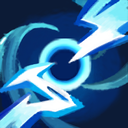 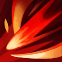 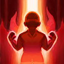 4회전 난격(연타)→
4회전 난격(연타)→ 5연쇄 번개(파멸)→
5연쇄 번개(파멸)→ 6난타(연타)→
6난타(연타)→
연타 광역 대표 빌드 · 궁극기 폭주는 등록자가 꺼 둔 칸이라 순서 번호가 없어요
물약을 적게 쓰는 273 추천 변형은 힐 칸을 생명의 축복·생명의 흐름 두 개로 잡고, 도술 설정의 체력 조건을 각각 95%, 90%로 맞췄다고 등록자가 적었어요.
파멸+저격(추천 349)은 등록자가 연쇄 번개 → 검기 폭발 → 요기 폭발 흐름을 핵심으로 꼽았고, 그 뒤 순서는 자동 사냥을 돌려 보며 맞추라고 했어요. 피가 밀리면 폭발하는 화살 자리를 생명의 흐름으로 바꾸는 114 추천 변형도 있어요.
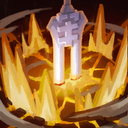 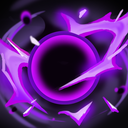 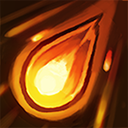 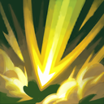 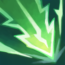 1연쇄 번개(파멸)→
1연쇄 번개(파멸)→
파멸+저격 대표 빌드 · 번호는 등록자가 정해 둔 앞 세 개만 있고 나머지는 순서 미정이에요
절명+저격 단일(추천 362)은 단일 극딜용(등록자 표기) 구성이고, 사냥용으로는 힐을 두 칸 넣은 151 추천 변형이 올라와 있어요. 이 변형은 도술 설정에서 순서를 맞추는 게 필수라고 적었고, 체력 조건은 생명의 흐름 85~90%, 생명의 축복 95~98%예요.
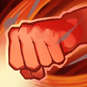 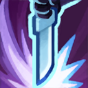 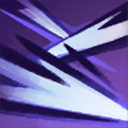 1꿰뚫는 저격(저격)→
1꿰뚫는 저격(저격)→ 2암습(절명)→3사격(저격)→
2암습(절명)→3사격(저격)→ 4쇠뇌 사격(저격)→
4쇠뇌 사격(저격)→ 5이중 사격(저격)→
5이중 사격(저격)→ 9찌르기(절명)
9찌르기(절명)
절명+저격 단일 대표 빌드 · 2번 암습이 궁극기이고 힐 칸이 없는 구성이에요
빌드 구성·순서: 깨비지지 기준 10월 19일 조회(비공식 팬이 만든 데이터 사이트) · 도술 아이콘: 공식 도깨비 서고(출시 전 캡처)
상위 빌드는 힐 칸과 도술 설정의 '체력 조건'을 같이 쓰는 경우가 많은데, 공식 도술 가이드(7834)에 체력 조건과 사용 순서를 정하는 설정이 있어요.
내 도술 설정 화면 예시 자리예요. 시전 순서와 체력 조건을 여기서 맞춰요.
유형마다 커뮤니티 평가는 어떻게 갈리나요?
유형마다 장단점이 달라서 의견이 갈리고, 공통으로 걸리는 건 겹사(같은 자리에 다른 사냥꾼이 겹치는 상황)·물약·스펙 요구예요.
| 유형 | 장점(커뮤니티 의견) | 단점·주의(커뮤니티 의견) |
|---|---|---|
| 기동 광역 | 겹사 상황에 강하고 이동하면서 덜 맞아 유지력이 좋다는 평 | 도술 선택권이 다섯~여섯 개 필요하다는 평, 오프라인·절전 모드를 못 쓴다는 평, 상위 사냥터에선 추천하지 않는다는 의견, 겹사를 만든다는 점이 '비매너'라는 논란 |
| 파멸(+저격) | 겹사 내성, 힐 없이도 가능, 도술 선택권 부담이 적다는 평 | 쿨타임이 길어 모아 둔 몬스터를 겹사에게 뺏길 수 있고, 스킬 한 방에 체력을 반 넘게 깎는 스펙이 필요하다는 평. 작성자 보고로 전투력 18만 비경 3단계에서 물약 40~50개 |
| 연타 광역 | 무난하고 안정적, 몬스터가 밀집한 비경(비경 탐험 콘텐츠)에서 좋다는 평 | 몬스터가 퍼진 필드에선 효율이 떨어진다는 평 |
| 절명+저격 단일 | 보스·필드 보스·레이드 단일 딜, 힐·물약 없이 돌렸다는 보고 | 저격 조정 예고로 불안하다는 의견, 겹사에 자리를 뺏긴다는 평 |
커뮤니티 글과 댓글 기준 10월 19일 조회 · 수치는 작성자 보고라 사실로 확정된 값이 아니에요
공식은 기동 관련 버그를 고칠 예정이고, 다음 주부터 붐비는 사냥터의 채널당 입장 인원을 줄인다고 10월 17일 라이브에서 예고했어요. 인원이 줄면 메타가 바뀔 수도 있다고 말해서, 기동 평가는 점검 뒤에 달라질 수 있어요.
내 상황에서는 어떤 유형을 고르면 되나요?
사냥터가 붐비는지, 몬스터가 모여 있는지, 도술 칸이 몇 개 열렸는지 세 가지로 가르면 가장 덜 헤매요. 아래 표에서 상황부터 찾아보세요.
| 상황 | 고를 유형 | 근거 |
|---|---|---|
| 사냥터가 붐비고 도술 선택권이 넉넉할 때 | 기동 광역 | 겹사에 강하다는 커뮤니티 평이 많고, 도술 선택권이 많이 필요해요 |
| 몬스터가 밀집한 비경일 때 | 연타 광역 | 밀집 리젠에서 좋고 무난하다는 커뮤니티 의견 |
| 보스·레이드를 잡을 때 | 절명+저격 단일(암습) | 단일 극딜용(등록자 표기)이고 힐 칸을 단일 도술로 바꾼 변형이 올라와 있어요. 레이드는 10월 21일 점검 전까지 일시 이용 제한이에요(10월 19일 공식 공지) |
| 힐 없이 몰아 가고 싶을 때 | 파멸(+저격) '뉴파멸' | 한 방 피해가 큰 고스펙에서만 좋다는 커뮤니티 의견 |
깨비지지 상위 12개 빌드는 전부 8칸인데요, 공식 도술 가이드 7834에 따르면 도술은 기본 5칸에 잠금 3칸이 있고 잠금은 영기 수련 5-1 완료·전투 멤버십·산군의 석등 3-1 완료로 풀려요. 도술이 없을 때는 일섬 대신 공간 결계, 월식 대신 도약 찌르기로 바꾸라는 설명이 기동 변형 추천 67에 있어요.
PvP 도술 조합은 지금 뭐가 인기인가요?
아직 인기 상위 PvP 조합이라고 부를 근거가 없고, 확인되는 건 공식이 올린 피해량 상향과 커뮤니티의 '저격 베이스' 의견 정도예요.
- 공식 확정 — 도술 불침이 있어서 행동 불가가 6초 이어지면 3초 동안 상태이상·디버프에 면역이 돼요(재발동 대기 60초, 공식 도술 가이드 7834).
- 공식 예고 — 10월 21일 1대1 친선전이 열리고 패배해도 사망이 없고 관전도 가능하다고 공식 도깨비 서고가 안내했고, 12월에 4대4 실시간 결투와 1대1 비동기 랭크전이 로드맵에 올라 있어요.
- 커뮤니티 의견 — 저격을 베이스로 깔고 은신·이동기를 서브로 붙이자는 댓글, 은신이 너무 세다는 글에 기만으로 은신을 탐지하거나 보호막을 벗기자는 답이 달렸어요.
- 커뮤니티 의견 — 낙화·문파전에서 다들 저격만 들고 와서 다양성이 없다는 지적과 함께, 체력이 거의 남지 않으면 기습·암습으로 마무리한다는 의견이 있어요.
다만 깨비지지 유저 추천 158개 중 이름·설명에 PvP용이라고 밝힌 빌드는 6개이고 최고 추천이 4예요. 사냥 1위 1,006과 견주면 인기 순위를 매길 표본이 못 돼서, 이 글에서는 PvP 조합표를 따로 만들지 않았어요. 승률이나 수치 근거를 댄 글도 찾지 못했어요.
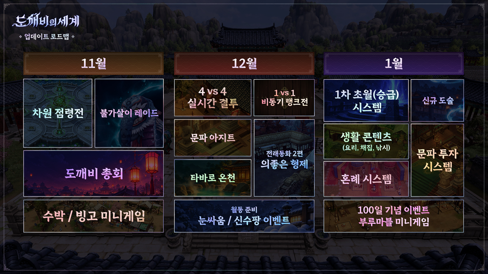
공식 업데이트 로드맵 슬라이드예요. 12월에 4대4 실시간 결투와 1대1 비동기 랭크전, 1월에 신규 도술이 적혀 있어요.
출처: 카카오게임즈 도깨비의세계 공식 라이브(10월 13일) 슬라이드
10월 21일 도술 초기화는 뭐가 어떻게 바뀌나요?
10월 21일 정기 점검에서 도술 강화·돌파 진행 내역이 초기화되고, 쓴 재화는 소급해서 돌려받는다고 공식 공지(17815)가 안내했어요.
- 강화에 쓴 재화는 도술 요령서 선택 상자로 받아요.
- 돌파는 기대값이 아니라 실제 시도 횟수와 사용한 재화 기준으로 소급돼요.
- 도술 각성은 초기화 대상이 아니에요.
- 10월 13일 라이브 시점부터 돌파만 일시 제한이고, 강화는 점검 전까지 할 수 있어요.
- 초기화 뒤 당분간 재초기화는 없다고 공식 라이브(10월 17일)에서 예고했어요.
따라 하기 전에 내 스펙으로 직접 재 보려면 어떻게 하나요?
영기 수련 9-1을 마치면 열리는 도깨비 수련장에서 허수아비를 쳐서 총 피해량·초당 피해량·도술별 점유율을 직접 잴 수 있어요(공식 가이드 7981).
수련장 측정 화면 예시 자리예요. 도술별 점유율을 보면 8칸 중 어느 도술이 딜을 맡는지 보여요.
제 수련장 기록에서 점유율이 가장 높았던 건 〔기동 계열 / 파멸 계열 / 절명·저격 계열 / 연타 계열〕 도술이었어요.
자주 묻는 질문
Q. 깨비지지에서 유저 추천 말고 내 도술로 빌드를 받아볼 수 있나요?
깨비지지의 추천 덱 고정 목록은 사라지고 '도술 빌드 추천받기' 계산기가 생겼어요. 딜(DPS)이 높은 순·서포터·힐러·제어(CC) 중에서 고르고 7칸·8칸을 골라 받는 방식이에요(10월 19일 조회).
Q. 도술 화면의 순위는 믿어도 되나요?
공식 도술 가이드 7834에 따르면 도술 화면의 순위는 50레벨 이후 장착한 도술을 집계한 참고 순위예요. 사냥 효율을 보장하는 값은 아니라서 깨비지지 인기 빌드와 나란히 놓고 참고만 하시면 돼요.
Q. 공식이 아직 안 밝힌 건 뭔가요?
10월 14일 상향의 폭(%)과 상향된 광역기의 개별 도술 이름은 공개되지 않았어요. 그래서 이 글에도 상향 수치는 한 줄도 없어요.
도깨비의세계 도술 조합 정리
초기화 선택은 화요일 라이브 설명을 들은 뒤에 하시는 걸 추천드려요. 개편이 끝나면 바뀐 도술 기준으로 다시 들고 올게요~
✔ 도깨비의세계 같이 보기 좋은 내용
· 도깨비의세계 도술 조합 추천 유저 추천 빌드 7개, 암습 빌드 시전 순서와 도술 슬롯 해금 조건
· 도깨비의세계 직업 없다? 도술 스타일 12가지 4계열로 조합하는 법, 신식 개방 조건까지
· 도깨비의세계 PvP 콘텐츠 4종 총정리, 낙화의 전장 차원점령전 차이부터 미혹의 정원 신기쟁탈전까지
참고한 곳
· 공식 공지 — 도술 초기화 진행 및 도술 돌파 일시 제한 안내(17815)
· 공식 업데이트 안내 — 10월 14일(18403)
· 공식 가이드 — 도술(7834)
· 10월 13일·17일 공식 라이브 방송(카카오게임즈 도깨비의세계 공식 채널)
조회한 곳(팬 사이트·비공식)
· 깨비지지 도술 빌더 유저 추천 — 2026년 10월 19일 밤 9시 30분 무렵 조회
기준 시점 2026.10.19 · 10월 21일 점검 뒤 개편 내용이 올라오면 이 글을 다시 정리해요.